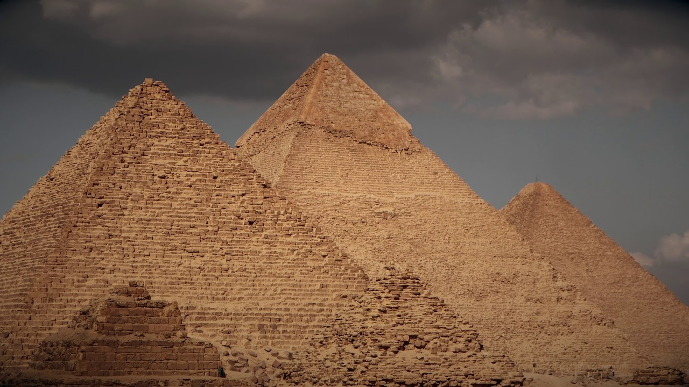
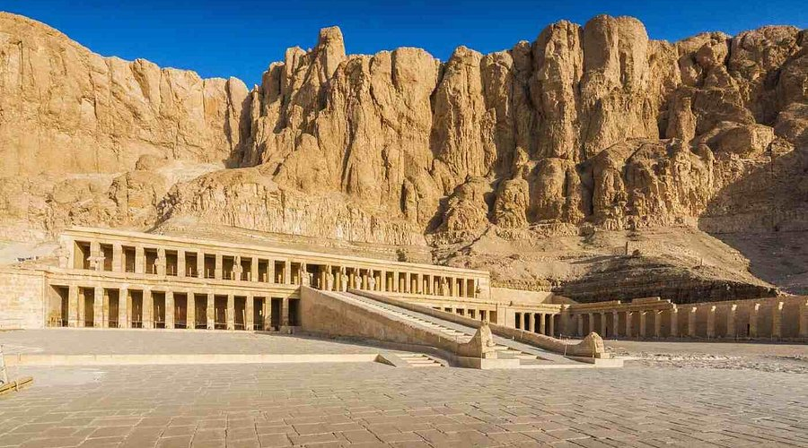
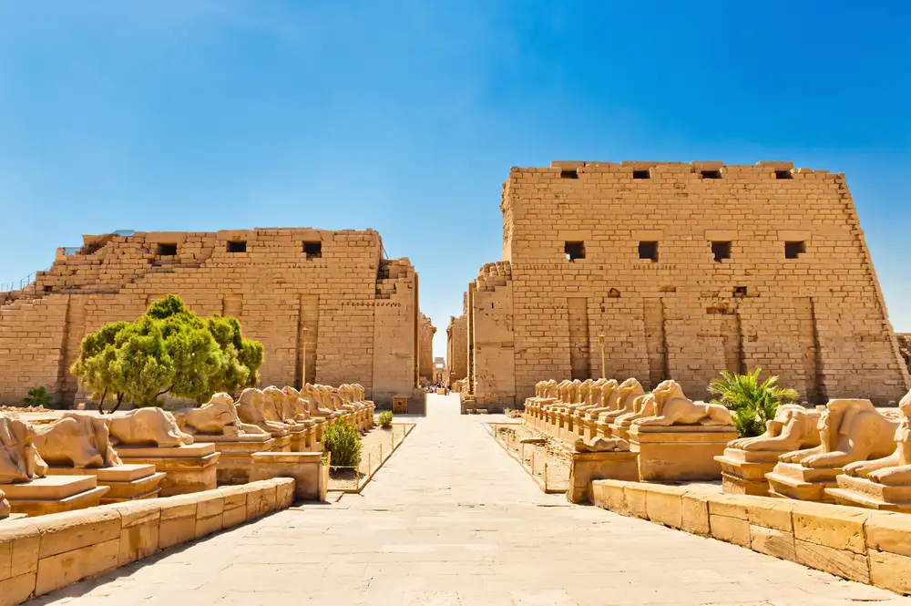

Pontos Turísticos
O Egito é um dos destinos turísticos mais procurados do mundo, conhecido por oferecer uma experiência única que mistura história milenar, cultura rica e paisagens impressionantes. Ao longo de seu território, é possível encontrar vestígios de uma das civilizações mais antigas da humanidade, o que torna o país especialmente atrativo para quem deseja conhecer mais sobre o passado.
Grande parte do turismo no país está ligada a monumentos históricos construídos há milhares de anos, muitos deles preservados até hoje. Essas construções impressionam pelo tamanho, pela complexidade e pelo nível de conhecimento técnico envolvido em sua criação. Além disso, há diversas áreas arqueológicas que revelam detalhes sobre a vida, a religião e os costumes da antiga sociedade egípcia.

Pirâmide de Gizé
As Pirâmides de Gizé são um dos maiores símbolos da civilização egípcia antiga. Foram construídas há mais de 4.500 anos como túmulos para faraós importantes. Sua grandiosidade impressiona visitantes de todo o mundo até hoje. A engenharia envolvida em sua construção ainda é motivo de estudo e admiração. Elas estão localizadas próximas à capital, facilitando o acesso turístico. O cenário ao redor é marcado pelo deserto e pela paisagem histórica. É um dos destinos mais icônicos e visitados do planeta.

Esfinge de Gizé
A Esfinge é uma enorme estátua com corpo de leão e cabeça humana. Ela simboliza força, poder e sabedoria na cultura egípcia antiga. Sua construção remonta a milhares de anos e ainda intriga pesquisadores. Está localizada próxima às pirâmides, formando um importante conjunto histórico. Mesmo com os efeitos do tempo, mantém sua presença imponente. Existem muitos mistérios sobre sua origem e função exata. É um dos monumentos mais reconhecidos e visitados do Egito.

Vale dos Reis
O Vale dos Reis é uma importante necrópole onde foram enterrados diversos faraós. As tumbas são escavadas nas rochas e possuem ricas decorações internas. Os desenhos retratam crenças sobre a vida após a morte. O local é essencial para estudos sobre o antigo Egito. Muitas descobertas arqueológicas importantes ocorreram nessa região. O clima seco contribuiu para a preservação das estruturas. É um dos destinos mais relevantes para quem aprecia história antiga.

Templo de Karnak
O Templo de Karnak é um dos maiores complexos religiosos já construídos. Foi ampliado ao longo de séculos por diferentes faraós. O local impressiona por suas colunas gigantes e esculturas detalhadas. Era dedicado ao culto de importantes divindades egípcias. Suas ruínas revelam a grandiosidade da arquitetura antiga. O espaço inclui pátios, avenidas e áreas cerimoniais. É um dos pontos turísticos mais visitados e fascinantes do Egito.